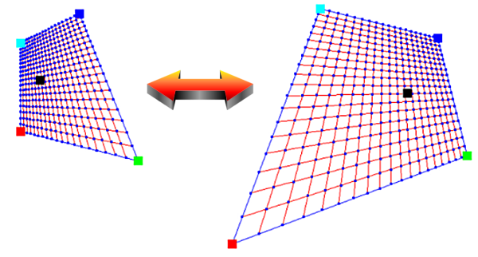

public final class QuadToQuadMapping
extends java.lang.Object
QuadToQuadMapping class provides a perspective mapping between two convex quadrilaterals.
This class maps 2D-data points between two convex quadrilaterals:

Note: it is assumed that the X axis points to the right and the Y axis points upwards.
Note that this class cannot be subclassed!
Quadrilateral,
QuadMapping| Constructor and Description |
|---|
QuadToQuadMapping(QuadMapping quad1Mapping,
QuadMapping quad2Mapping)
Constructs a
QuadToQuadMapping object based on the two perspective mappings between quadrilaterals. |
QuadToQuadMapping(Quadrilateral q1,
Quadrilateral q2)
Constructs a
QuadToQuadMapping object based on the two specified quadrilaterals. |
| Modifier and Type | Method and Description |
|---|---|
java.awt.geom.Point2D.Double |
mapQuad1ToQuad2(double x,
double y)
Maps a 2D-data point in the first quadrilateral to a 2D-data point in the second quadrilateral.
|
java.awt.geom.Point2D.Double |
mapQuad1ToQuad2(java.awt.geom.Point2D.Double p)
Maps a 2D-datapoint in the first quadrilateral to a 2D-data point in the second quadrilateral.
|
java.awt.geom.Point2D.Double |
mapQuad2ToQuad1(double x,
double y)
Maps a 2D-data point in the second quadrilateral to a 2D-data point in the first quadrilateral.
|
java.awt.geom.Point2D.Double |
mapQuad2ToQuad1(java.awt.geom.Point2D.Double p)
Maps a 2D-data point in the second quadrilateral to a 2D-data point in the first quadrilateral.
|
void |
set(QuadMapping quad1Mapping,
QuadMapping quad2Mapping)
Sets the perspective mapping based on the two perspective mappings between quadrilaterals.
|
public QuadToQuadMapping(QuadMapping quad1Mapping, QuadMapping quad2Mapping)
QuadToQuadMapping object based on the two perspective mappings between quadrilaterals.quad1Mapping - the first perspective mapping to usequad2Mapping - the second perspective mapping to useQuadToQuadMapping(QuadMapping,QuadMapping),
set(QuadMapping,QuadMapping)public QuadToQuadMapping(Quadrilateral q1, Quadrilateral q2)
QuadToQuadMapping object based on the two specified quadrilaterals.q1 - the first quadrilateral to use for the perspective mappingq2 - the second quadrilateral to use for the perspective mappingQuadToQuadMapping(QuadMapping,QuadMapping),
set(QuadMapping,QuadMapping)public java.awt.geom.Point2D.Double mapQuad1ToQuad2(double x,
double y)
x - the x coordinate of the 2D-data point in the first quadrilateraly - the y coordinate of the 2D-data point in the first quadrilateralpublic java.awt.geom.Point2D.Double mapQuad1ToQuad2(java.awt.geom.Point2D.Double p)
p - the 2D-data point in the first quadrilateralpublic java.awt.geom.Point2D.Double mapQuad2ToQuad1(double x,
double y)
x - the x coordinate of the 2D-data point in the second quadrilateraly - the y coordinate of the 2D-data point in the second quadrilateralpublic java.awt.geom.Point2D.Double mapQuad2ToQuad1(java.awt.geom.Point2D.Double p)
p - the 2D-data point in the second quadrilateralpublic void set(QuadMapping quad1Mapping, QuadMapping quad2Mapping)
quad1Mapping - the first perspective mapping to usequad2Mapping - the second perspective mapping to use